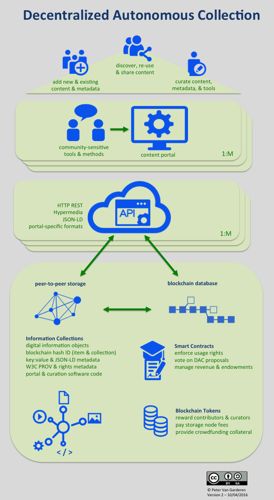

originally posted at Medium.com
A Decentralized Autonomous Collection is a set of digital information objects stored for ongoing re-use with the means and incentives for independent parties to participate in the contribution, presentation, and curation of the information objects outside the control of an exclusive custodian.

Decentralized Autonomous Collections (DAC) may be created by any individual or community based on any number of criteria including subject matter, newsworthy events, geographic region, media format, content provenance, business function, political objectives, etc..
While I am currently exploring its implications for the types of materials collected by traditional memory organizations like archives and libraries, the DAC concept extends equally to other centrally-controlled repositories of information used for memory, knowledge, and entertainment, e.g. YouTube, Flickr, Wikipedia, Internet Archive, etc..
DACs adapts the concept of a Decentralized Autonomous Organization (DAO) to the management of sets of digital information objects. A DAO is a self-governing organization that is designed to operate according to a set of hard-coded business rules. Recent advances in blockchain technology has launched a number of new DAO initiatives (e.g. Slock.it).
At its core, blockchain technology consists of a distributed public database that leverages cryptography and peer-to-peer technology to group data into timestamped blocks and store these in an immutable chain of transactions. The public, distributed nature of this data store makes it nearly impossible to tamper with or revise the data and thereby removes the need to trust that a data-provider is reliably enforcing security protocols. The Bitcoin digital currency was the first and most well-known application built on a blockchain.
A second generation blockchain technology know as Ethereum added the ability to run Turing-complete software code on the peer-to-peer nodes that process its transaction blocks. These Ethereum “smart contracts” have provided the technical means to implement incorruptable DAO business rules on its distributed blockchain database. They also enable the exchange of cryptocurrency tokens to fund digital processes and real-world activities related to the management of the DAO.
The blockchain and the other technical components which make the DAC concept possible are each complex topics on their own. While I am working on proofs-of-concept for a few of the sub-components described in this article it is not intended to serve as a tutorial. Where applicable, I’ve merely provided some links for further study.
My intention here is to connect the dots between these components; to allow the Decentralized Automonous Collection idea to emerge in fuller relief. I see DACs as an eventual destination in the evolution of managing information collections which includes a number of vaguely defined stops along the way. I want to start by explaining why it may be worth the effort to try and get there.
I work in the field of digital archives, electronic recordkeeping, and library technology. I am the original developer of the open-source AccessToMemory (AtoM) and Archivematica software applications. These tools are widely used in archives, libraries and museums around the world. They are designed to preserve and provide access to collections of archival materials. Both AtoM and Archivematica are intended to be practical implementations of archives and library standards that have been codified to establish best practices for our profession.
Over the past couple of decades there has been plenty of post-modern contemplation in our field about the principles underlying these practices. In particular how it is misleading to consider the custodian as a purely objective servant to the collections under their care. These discussions have been mostly academic debates confined to our professional journals and conferences.
However, here in Canada, events related to our Truth and Reconciliation Committee (TRC) on the national tragedy of indigenous residential schools has led to renewed soul-searching amongst archival professionals about the implicit structures of authority perpetuated through institutionalized collections. The TRC’s legal battle with Library Archives Canada for access to critical documents is just one of several reasons behind indigenous scholars’ call to ‘decolonize archives’ and a corresponding debate on what that might entail.
To be clear, I am not sure whether Decentralized Autonomous Collections are an answer to the call to decolonize archives. I have not consulted any indigenous peoples and I am concious of my own bent towards techno-solutionism. Some of the technologies I discuss are still quite esoteric and complex to grasp even for technology professionals. Therefore, the only connection that exists right now is that this debate about ownership and access to archival collections fuelled and connected a number of existing ideas in my mind which led me to crystalize the concept I discuss here.
That process coincided with reading a recent presentation by Mark Matienzo, the Director of Technology for the Digital Public Library of America. Matienzo reflected on how marginalized communities are further alienated by the metadata systems and technologies of “repositories of authoritative knowledge.” He raises questions about how subjects and objects are named and thereby how meaning and value judgements are controlled and perpetuated. He also raises related concerns about how “the corporatization of library infrastructure” plays a role in this dynamic.
To Hell With Good Intentions: Linked Data, Community and the Power to Name
Therefore, in spite of often good intentions, the materials that have been collected by memory organizations, how these are contextualized, and the rules that govern how they are accessed have been coloured by societal and institutional privilige, professional tradition and inertia, and a lack of genuine community engagement.
These biases are baked into our institutional appraisal and acquisition policies, metadata standards, information technology, and access rights and methods. Princeton archivist Jared Drake goes as far as to include the underlying archival principle of provenance in this list and argues that it is a remnant “of a colonized mode of thinking about the world through the gaze of great white men, whose complexities and contradictions previously could only be explored in the archives by similarly complicated and great white men.”
RadTech Meets RadArch: Towards A New Principle for Archives and Archival Description
Until recently, I believed that becoming self-aware of these biases was the end-goal. That this would create more progressive information professionals and better ‘best’ practices in centralized collections such as those exemplified by the National Library of Australia’s Trove portal. It contains over 470 million records and is the largest, freely accessible collection of Australian history and culture ever assembled. Trove was developed under a principle of radical openness. It allows users to freely create and share tags and virtual collection lists. That is to say, it allows them to build and share their own context. Trove also provides APIs for developers to re-use its content in their independent applications.
However, even exemplary collections like Trove are subject to economics and the political whims of their owners. In this case, a conservative Australian government that slashed funding and suggested looking for private donors to maintain the collection. As Hugh Rundle points out in his assessment of the Trove situation, “neoliberal market fetishisation with a dash of authoritarianism is the ideology of our times.”
Trove and the case for radical openness
Archivists and librarians working in the field of digital preservation will shudder at reports like this. They are painfully aware that the biggest threat to long-term access to digital information objects is not the formidable challenge of technology obsolescence but rather neglect caused by a lack of funding to maintain systems and active curation practices. Appropriately, organizational viability and financial sustainability makes up one third of the Trustworthy Repositories Audit & Certification checklist, the international best practice for deploying digital collections that aim to ensure long-term accessibility.
Another trend that may become an issue in the near future is that most digital archive solutions implemented today are designed to run on commercial cloud solutions. In the past six months I’ve seen Requests for Proposals from major Canadian federal, provincial and municipal institutions, each of which explicitely calls for deployment of the proposed digital archive systems in externally hosted data centers. Behind this requirement are a number of valid economic and technical reasons. These same reasons will ensure that solutions built on the dominant commercial cloud solutions will win these bids. Extrapolating this trend forward and across borders I fear that in the near future most of the world’s digital heritage will be centralized on Amazon, Azure, and Rackspace data centres thereby linking its fate to that of a very short list of service providers.
The situations I have highlighted above are from relatively prosperous countries with democratic traditions. I haven’t even mentioned totalitarian governments, impoverished societies, or the significant list of privacy and long-term access concerns related to information collections owned by private corporations like Facebook and Google. Of course, the spectre of intelligence agency snooping, made easy by the reliance on centralized web servers, also casts a long shadow in the post-Snowden era.
Nevertheless, raising concerns about the privacy, impartiality, or viability of institutionalized information collections is typically dismissed as an academic argument. It is a commonly held belief that centralized organizations, whether public institutions or private corporations, are simply necessary to achieve economies of scale, ensure authenticity and integrity, and to support the environment required to nurture the specialization and expertise required for long-term preservation and elegant access to large-scale collections of information resources.
However, I believe that the emergence of blockchain technology and the concept of Decentralized Autonomous Organizations, alongside the maturation of peer-to-peer networks, open library technology architectures, and open-source software practices offers a new approach to the issues of control, privilege, and sustainability that are inherent to many centralized information collections.
In exploring this concept of Decentralized Autonomous Collections it is not my intention to work against memory organizations or their continued funding and self-improvement. In fact, it is my sincere hope that progressive institutions will explore and pilot this concept as one way to address the many challenges they face. While decentralized systems are characterized by distributed nodes with equal technical functionality, these systems and networks still require ‘thought leaders’ and project managers to inspire and direct activities. These are roles that could and should be sponsored by progressive memory organizations that see Decentralized Autonomous Collections as another, possibly even better, way to fulfill their mandates.
The issues raised above are meant as an argument for exploring alternative ways to organize information collections. While I would expect grassroots, flat-hierarchy organizations such as those exemplified by the Occupy movement or People’s Archives projects to be the first to pilot these concepts, I hope that traditional memory institutions will follow suit as a way to explore new sustainability and scalability models. The concept of Decentralized Autonomous Collections could serve as a hedge against a number of risks or practices inherent in a centralized model that may work against the shared objectives of most information collection custodians. That is, the mission to provide unrestricted free and open access, in perpetuity, to collections of information that serve all individuals and communities equally in their pursuit of identity, entertainment, knowledge or truth.
At the core of the Decentralized Autonomous Collection concept is the ‘permissionless’ availability of information objects on peer-to-peer storage. Probably the most common example of this type of functionality is the BitTorrent protocol, network, and client software. It is permissionless because anyone can freely download and fire up a client and begin downloading and distributing information objects on the network. You don’t need to register an account or be vetted by a central gatekeeper. There is no central host that controls access to the collection. Each peer has equal access to the content and it is not possible to take down the network by disabling a central server or URL.
In addition to BitTorrent, there are some interesting peer-to-peer storage networks currently being prototyped in the blockchain domain which may provide a sound and sustainable DAC storage layer. These include IPFS, Storj, and MaidSafe. Some key features that might determine the most suitable DAC storage platform include whether it is bundled with a crypto-token incentive scheme, end-to-end encryption, and the ability to delete a file from the collection. These may end up being the distinguishing criteria between the permanent, distributed web concept where all content on the network is intentionally published for free and forever versus information collections whose contributers are primarily looking for storage solutions and the ability to share information with a restricted audience or under specific usage terms.
By aggregating objects from peer-to-peer storage networks, an unlimited number of ‘virtual’ collections can be made available through traditional HTTP access clients and portals. These portals can add value by curating and presenting the content generically or in culturally-sensitive ways to specific designated communities using new, custom apps or existing web content management tools like Wordpress, Omeka, Mukurtu, or Neocities. These are examples of relatively user-friendly applications that allow non-professionals to present the content and context of their information collections in a way that is appropriate to their intended audience and sensitive to community needs.
The metadata that these portals and its users create are valuable information objects in and of themselves and form another key component in the architecture of a Decentralized Autonomous Collection. This includes descriptions of information objects, their context of creation and use, their interpreted meaning and value, technical information required for curation, and tags and taxonomies that aid in their discovery. Depending on the DAC’s design principles, this metadata may conform to professional standards, conventions agreed upon within a designated community, and/or free form formats that reflect the needs, viewpoints, and backgrounds of individual contributors.
This metadata is stored as first-class objects on the peer-to-peer network using NoSQL key-value pairs or, better yet, Linked Data triples. These types of serializations allow for system independence and flexible re-use of the metadata over time and across different access portal implementations. The tools and practices that support this approach (e.g. W3C’s JSON-LD) are finally achieving maturation within the web development and library technology community.
The metatadata and content stored on the peer-to-peer networks are mediated through middleware APIs providing DAC micro-services that may include RESTful hypermedia content access, search index caches for the metadata and full-text stored on distributed nodes, and conversion of metadata triples to the data serializations used by popular content management tools (e.g. CSV, SQL).
Perhaps the best working example that brings together some of the technical components described above is the API used by the Public Media Platform. A key component of this API is the Collection.doc+JSON media type which provides a standardized way to group otherwise disparate online resources into a coherent collection. Other good examples include the APIs provided by the Digital Public Library of America and the National Archives of Austrialia’s Trove portal.
In the DAC model there is not an exclusive API owner or gatekeeper to the shared content as in the above examples. If the provider of one API to a DAC is not willing to grant a key to a developer that wants to build an app or portal on top of that API, the developer would still have access to the information in peer-to-peer storage and could chose to harvest the content directly for their portal or develop and deploy their own API.
The absence of an exclusive custodian places additional burden on the proof of authenticity for information objects stored in a DAC. This requirement would be met in a DAC through the registration of cryptographic hashes of information objects and their provenance metadata (expressed in machine-readable W3C PROV) on a blockchain database using functionality such as that provided by ProofOfExistence.com. Mediachain is a good example of a project that is working on a protocol and supporting tools that deliver this functionality for image media.
Lastly, going one level of abstraction deeper, the portal software apps and API middleware code could also be stored on the peer-to-peer storage layer using a full-clone software versioning system like Git. This would allow for the repurposing of collection management tools by other communities or the re-launching of portals that were taken offline due to technical failure, financial constraints, or political attacks.
While permissionless participation in the distributed network is a fundamental design principle for a DAC, this does not mean users should necessarily have permission to do whatever they want with the information objects in a Decentralized Autonomous Collection. The degree of enforcement of the rights of information creators and sharers would likely vary from collection to collection.
On one extreme there would be fully unregulated and open access like we see on the BitTorrent network. This will be fine for information collections that are intended to be fully open by default (e.g. Wikipedia or Wikileaks). On the other end of the spectrum there could be highly sensitive collections, e.g. medical records, that require the strictest privacy and security protocols.
If users can be confident that the underlying technology is incorruptible and can reliably regulate under what conditions access is granted, then perhaps a mature DAC solution would eventually be considered to be more trustworthy than a sole service provider precisely because there isn’t a designated gatekeeper or snooping agent who has the ability to abuse that centralized power.
To express what usage is permitted for information objects in its collection, a DAC could employ Creative Commons licenses and the machine-readable rights statements developed by the Europeana portal and the Digital Public Library of America. To enforce those rights there are a number of existing digital rights management techniques. Of course, these tend to have a fairly poor reputation amongst information consumers for a variety of reasons. Therefore, there are a number of projects that are exploring how blockchain smart contracts can be used to decentralize traditional DRM techniques. The objective is to place more flexible control in the hands of content creators and consumers rather than information publishing middlemen that seek to enforce content channel monopolies at their expense.
In its simplest form, a decentralized rights management architecture might store information objects in encrypted format and use smart contracts to provide private keys to unlock that content when certain criteria are met, e.g. a micropayment is made to the smart contract. This is where some recent blockchain innovation in the music industry shows a promising way forward. A good example is the UJO Music project which is exploring these techniques through the Dot Blockchain concept. Lbry.io is a similar project that has developed its own peer-to-peer and blockchain protocol which includes the ability to pay storage providers, blockchain miners, and content contributors.
While the technical components may now exist to deploy a decentralized collection, it still requires intentional coordination to implement it in a coherent fashion. There could be a variety of reasons for why a group of people might decide to organize themselves and systems outside the mandate of a centralized organization in order to preserve some information for future access. As discussed further above, these may include concerns about privilege and control along with dissatisfaction about the way existing information collections are being presented and curated by exclusive custodians. In this context the term ‘autonomous’ refers to the ability to act independently, in a self-contained way, outside of external controls.
The values and principles which influence a Decentralized Autonomous Collection’s content, functionality, accessibility, and its rate of adoption can be encoded as business rules by its initial implementers and updated by its subsequent participants using smart contracts deployed on blockchain technology. Smart contracts monitor the state of certain pre-programed conditions and when these are verified to be true they execute processes such as the release of cryptocurency funds to a designated online wallet or delivering a private key to unlock a digital file. Decentralized autonomous organizations such as Slock.it are providing compelling models for this type ‘rule of code’ replacing the ‘rule of law.’
Stakeholders in an autonomous organization are given the opportunity to vote on proposals that address how its shared assets are managed. Votes can be distributed per unique participant or weighted according to the stake that the participant has in the collective enterprise. This stake could be based on the reputation ranking of the individual as calculated by criteria such as total number of ‘Likes,’ ‘Upvotes,’ ‘Recommendations,’ ‘Tips,’ etc.. It could also be based on the amount of tokens held by the participant in the cryptocurrency denomination chosen by the DAC implementers. These might leverage existing cryptocurrencies like Bitcoin and Ether or they may choose to issue tokens specific to the DAC domain.
These tokens will serve as a type of collection management fuel that enable decision-making and incentivize service providers to complete tasks that benefit the maintenance and quality of the DAC. The maturity of online cryptocurrency exchanges ensure that these tokens hold real-world purchasing power beyond the DAC domain.
The initial balance of tokens could be fiat funds converted from traditional endowments or granting agencies that support the mission of the DAC. It could also be generated through a cryptocurrency crowdfunding campaign to launch or support the activities of a particular DAC. Other sources of DAC revenue could include micropayment fees for the use of its content, APIs, portals, and/or storage nodes.
The DAC business model can be hard-coded as smart contracts. These would also manage the reserve of tokens that are held as future payment for expenses such as API server hosting or storage. When deemed necessary, the DAC participants would vote on proposals to distribute tokens held in reserve to service providers such as content creators and contributors, collection curators, software developers, or system administrators. These might perform services such as adding new features to the DAC APIs and portals, implementing system architecture upgrades, migrating legacy content and metadata, metadata enhancement and clean-up, creating new online exhibits in one of the DAC’s access portals, or uploading content that accounts for a top percentage of downloads.
Of course, DACs would likely still depend on a significant amount of volunteer labour such as that already provided by museum interpreters, Wikipedia authors, open-source software contributors, YouTube videographers, etc.. However, these invididuals may be extra-motivated to participate in a given DAC if their work is rewarded with cryptocurrency tokens and/or reputation points when their contributions reach a given threshold, the rules of which are described and executed transparently through a public smart contract.
Admittedly the nuts-and-bolts of blockchain-based Decentralized Autonomous Organizations, such as voting mechanisms and service provider contract fulfillment, are still in a trial stage. The blockchain community is eagerly watching the progress of early implementers. I am also aware that there are many external forces and well-entrenched memory institution traditions that are working counter to the vision of the Decentralized Autonomous Collection concept as I have described it here.
Nevertheless, I am researching and developing components in this architecture that may contribute pieces to this larger whole. Therefore, I did want to get a bunch of these synergistic ideas out of my head and to sketch out a rough map, however flawed or incomplete, that I could share with others and use as my own guidepost. At least it now exists as a hypothetical destination in the evolution of managing information collections. Hopefully the right combination of optimistic idealism, cynical reactionism, and opportunistic risk-taking will inspire further collaboration and complimentary ideas on this path.